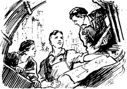

Ефропейский масштаб: все-все-все, кроме Джеки Чана.

Несколько лет назад мой приятель мистер Б., занимавшийся продюсированием
независимых групп, предложил съездить в Питер на один день. Утром, так
сказать, деньги, вечером стулья. Он пообещал знакомство с новой, молодой
группой Markscheider Kunst. Это будущие звезды, уверял мой приятель, пока
мы очередились в "Русском бистро" на Ленинградском вокзале. У них два вокалиста,
один из Заира, зовут Макангила, другой Ефр, этот местный, толковал мистер
Б., пока мы мялись перед проводницей, а та с выражением брезгливого недоверия
разглядывала наши билеты. Раскрутим их, сделаем клубный тур, бабок заработаем,
делился планами приятель, пока мы разбрасывали свой нехитрый скарб по купе.
Мистер Б. - ловкий парень. Уж если чего задумал, то так запутает, что
хоть к Минотавру катись. Вагонные споры - последнее дело, и мы легли спать.
История про папину зарплату
Однажды папа Ефра возвращался домой, получив зарплату. На него напали
какие-то лбы, сбили с ног, отобрали деньги. Но папа как-то умудрился проследить
за ними и вычислил, куда они скрылись. Потом он дошел до дома, где в это
время отдыхали его сыновья - Ефр с братом Кириллом, бас-гитаристом. Узнав,
что произошло, братья взяли по дубине и отправились "в адрес". Сломав дверь,
они ворвались в квартиру - там находилось несколько парней, среди них те,
кто напал на папу. Братья сокрушили их, затем нашли деньги, ровно отсчитали
искомую зарплату и удалились.
Их никто не преследовал.
Питер встретил по-болотному: шло что-то вроде дождя, дуло что-то вроде
ветра, но в такси нас посадили за вдвое меньшую сумму, чем вообще возможно
в Москве. Мы чего-то там поделали полдня, как-то поели-поспали. Часов в
пять поехали на канал Грибоедова, в предварительные кассы, за обратным
билетом. Там, возле входа, нас поджидал молодой человек угрожающих форм,
с пудовыми кулаками. В его глазах светилась доброта. Это был Ефр.
Мы залезли в "Икарус" и через полчаса уже пили чай, воскуривали благовония,
слушали музыку, обсуждали перспективы. Ефр рассказал, что до того, как
взять в качестве певца уроженца жаркой Африки, они играли гангста-рэп с
вокалистом-сербом по прозвищу Югослав Пе'трович. Югослав вернулся в Белград
- как раз в то время закончилась боснийская война. Он прислал Ефру изданную
в Сербии кассету с их альбомом, оттуда я запомнил одну песню, которую Югослав
исполнял по-русски. Что-то вроде: "Я сын, Jah, мафии сын".
История про технический перерыв
В Питере на концерты Markscheider Kunst часто приходят скинхэды. Когда
музыканты группы замечают их, то объявляется технический перерыв. После
этого они откладывают инструменты, выходят в зал и "подпускают мелкого"
- невысокий, худенький Макангила вежливо здоровается с бритоголовыми. Рекламная
пауза, и Ефр со товарищи вышвыривают скинхэдов вон.
Затем концерт продолжается.
Вечером отправились в клуб. Там шел пар изо рта, было холодно и малолюдно.
Markscheider Kunst взобрались на монументальную сцену - и понеслось: суккус,
реггей, какой-то панк с уклоном в бесбашенное латино, Макангила в белом
костюме, Ефр в майке с листом каннабиса. Антиутопический сон: мороз, дощатый
пол, раскрашенные кирпичи, интернациональный сумбур вместо музыки, на танцполе
заторможенные фрики. А за упругими стенами ночь, холод и мрак, но где-то
тепло.
Обратно в столицу ехали вместе с Ефром. Он собрался навестить жену,
а затем должны были начаться концерты. Купили водки и всю дорогу прохохотали
в нашем северном стиле, а утром расстались в позитивном состоянии. "Марк
Шнейдер был маркшейдер, тогда была зима, и Сима в эту зиму пришла к нему
сама." Они завоевали клубы сверхмегаполиса, посветились на концертах "Аукцыона"
в Горбушке, поразогревали девочек перед "Сплином", а потом ляпнули web-site
с real-audio и раз-раз-раз - оказались в Европе.
С Системой все в порядке. Мистер Б. давно уже отказался от идеи заработать
на Markscheider`ах и увлечен другими проектами. По столичным притонам кочуют
отпетые мошенники да богатые фанерные буратины. Ефр теперь в нашей деревне
только проездом. Мы встречаемся раз в полгода, тряпки жжем, смеемся.
История про невежливого охранника
Однажды Ефр приехал в Москву и пошел в гости. Его друзья, художники,
имели мастерскую в мансарде, под крышей, в доме, который почти целиком
заселили нэпманы. В подъезде сидела охрана, обнюхивался всяк туда входяший,
но к художникам пускали без особых затяжек. В тот раз попался новенький,
ретивый охранник, который сразу принялся грубить, толкаться, а когда Ефр
думал пройти к лифту, то цербер озлился и начал трясти черным пистолетом.
Тут озлился Ефр. Во мгновение ока он отобрал пушку. Охранник чуть не
плакал, умоляя отдать оружие. "Меня же уволят!" - стонал он. Ефр вошел
в лифт, потом вернул грубияну его пестик. "Иди и впредь не груби", - сказал
он.
Москва. 16 мая 1999 года. Середина дня. Голос ПГ встречается с Ефром
(группа Markscheider Kunst). Обсуждают поездки за границу, MTV, шоу-бизнес,
а также хохочут и сравнивают ментов (см. P.S.).
ПГ. Последний раз мы встречались зимой, в феврале. Markscheider
Kunst собирались в Финляндию на фестиваль. Теперь май, и я знаю, что вы
были не только в Финляндии, но и прокатились по Европе сверху вниз, с Севера
на Юг.
Ефр. Фестиваль, тот, о котором я тебе тогда рассказывал, не
состоялся, просто была пара концертов. Сейчас ближайший фестиваль будет
в конце мая, в Хельсинках, я, убей бог, не помню его названия. Но будет
весело: Zap Mama, Klimax, классные ребята. А у нас сейчас просто менеджеров
организовалось море, грубо говоря, в России, в Финляндии, в Германии, в
Швейцарии - везде по менеджеру. И ездили мы через Финляндию и Швецию в
Германию и Швейцарию и обратно.
ПГ. Расскажи об этом вашем пути.
Ефр. В Финляндию, как выясняется, все ребята ездят. Небольшой
город Тампере, но за один год и Wailers, и Skatalites, и все-все-все, кроме
Джеки Чана, там переиграли. Мы выехали 10 марта из Питера, в тот же день
концерт в Тампере, потом 12-го - в Хельсинках, а 13-го сели в Турку на
паром, приплыли в Стокгольм, оттуда двинулись на Юг, проехали Швецию за
ночь. Сели в Трелеборге на другой паром и вечером были уже в Германии,
в Травемюнде. Сперва поехали в Берлин, там чуть-чуть зависли, и насквозь
- в Швейцарию. У нас со Швейцарии, в принципе, начинался тур - там было
концертов десять в восьми городах. Или в девяти, не помню.
ПГ. Расскажи в двух словах о Берлине, как там сейчас обстановочка?
Ефр. Местные говорят, что, конечно, все портится. И связывают
это с новым канцлером. Ждали от него, что он зеленый будет чувак, он и
рекламировал себя, как зеленый парень, а теперь пришел к власти и закручивает
гайки. Ну, люди говорят: где это видано, чтобы в сквотах делали евроремонты?
Куда катится эта страна? Если здесь сейчас все отремонтируют, что же это
будет? Ну, тусовка, конечно, все равно сохраняется невероятная. Пять грамм
с собой носить можно.
ПГ. И там, я знаю, вы встречались с Mad Professor`ом.
Ефр. Ну, это секрет.
ПГ. Тогда оставим это между строк.
Ефр. Там встретиться-то можно море с кем. И Mad Professor, и
Alpha Blondy там были, Salif Keita там был тоже. И вот этот чудесный оркестр,
цыганский, я не помню, как они называются, убей бог. Который имел отношение
к записи саунд-треков к фильмам Кустурицы.
ПГ. Markscheider Kunst, получается, единственная группа с нашей
территории, путешествующая там?
Ефр. Еще ездят Speed Fire, они играют ска и тоже весьма популярны.
Я так понимаю, что у них контракт с некоторой немецкой компанией, устраивающей
концерты. Ну и "Не ждали" тоже во всех клубах, "Аукцыон" знают очень много
где, но они последнее время не ездят. Не сказать, что и мы сильно много
уж ездим, понимаешь, только второй год, как эта история стала более-менее
регулярной.
ПГ. А языковой барьер? Ваша программа по-прежнему двуязычна?
Ефр. Тре-ох! И больше, может, язычная программа!
ПГ. Но все-равно же поете по-русски?
Ефр. Поем, и народ с удовольствием на это как бы... Там людям,
в принципе, по балде, на каком языке ты поешь. Если при этом позитивно
вибрирует в помещении, то народ - на ура! К тому же в Германии очень много
кто русский язык знает. Ну, знают - это грубо сказано. Процентов 60 понимают
из того, что ты говоришь.
ПГ. Что касается ситуации с музыкой в нашей стране, как ты думаешь,
что тут будет?
Ефр. Ну, мне-то кажется, что здесь все накрывается медным тазом
помаленьку, потому что действительно классным-то бэндам, им тут тяжело,
а вот профанация с шоу-бизнесом... Ну, сам понимаешь, что тут происходит.
Все это MTV...
ПГ. Однако именно MTV эпизодически показывало клип Markscheider
Kunst. Как это получилось?
Ефр. Такая история. Человек, наш знакомый, некто Злотник Кирилл,
ходил-ходил с камерой вокруг, снимал какие-то материалы, кадрики. Никак
мы не думали, что он разрулит клип, но он каким-то образом быстро все смастерил,
и поскольку там с ними в дружбе на MTV, то его туда и продвинул. Все было
сделано не то что без нашего ведома, но без всякого паса в эту сторону.
Он сделал клип, решил его туда вставить, он его туда вставил*.
ПГ. Вам понравилось?
Ефр. Нет.
ПГ. Ха-ха-ха! Хуевый клип, конечно.
Ефр. И клип хуевый, и MTV говно.
ПГ. Но это не отменяет какие-то перспективы?
Ефр. Ну, там хотят второй клип. Но снимать клип - это дорого.
И вообще, нам кажется так: музыкант делает музыку, кино снимает кинематографист.
Если мы музыканты - давай играть, если кинематографисты - снимать, и путать
эти дела... Удачно получается очень редко. Телевизор в этом смысле очень
вредит, радио лучше - там слышишь исполнителя и можешь себе додумать что-то
на эту тему, а так смотришь в кадр... Может, он и классно играет, но ты
в ящик на него глядишь, тебе рожа его не понравится или что-нибудь еще.
ПГ. А пластинка выйдет здесь? Или там, за границей?
Ефр. Вышла. Пока мы были в Швейцарии, в Австрии сделали наш
мидидиск, то есть он и для компьютера годен. Там клип вот этот, еще то,
что снимали немцы для телевидения. Там восемь песен, какие-то фотографии,
пресс-папе. С подачи того же, кстати, человека, который снимал клип. Единственное,
что он маленько пролетел. Мы приехали в Швейцарию, играли концерты в дорогих
местах. Ну как дорогих... Там люди все богатые, все хотели покупать компакт.
У нас компактов не было. А когда мы приехали в Германию, где все подемократичней,
человек прислал нам эти диски. А там масса ошибок, и нам не очень-то все
понравилось - он взял неготовую запись, воткнул ее на сиди. Мы встали перед
необходимостью что-то с этим делать, продавать это задорого не хотелось.
Поэтому продавали незадорого, и этот парень пролетел с деньгами. Ну, вот
в Германии, Швейцарии, Финляндии этот диск существует в продаже. А здесь,
в России, 95 года альбом, который Сева Гаккель издал, мы писали в Там-Таме
еще, называется "Кем быть?", это на кассетах. Это как бы первый альбом.
Сейчас какой-то московский деятель, честно говоря, я запамятовал его имя,
собирается выпустить ряд альбомов интересных ему коллективов, в том числе
"Залив кита", такая есть группа московская, еще он хочет "Ленинград", нас,
еще я слышал разговор про Sun Music. Посмотрим, что из этого получится.
ПГ. Швейцария с Германией далеко, а мне интересно: ваша музыка
изменилась?
Ефр. Со стороны люди говорят, что так все стало поматерей, ну
а изнутри, пока сам играешь концерты, тебе это не сильно видно. Новые песни,
конечно, имеются, они посырее, чем старые, но все равно они новые.
ПГ. Вы больше тяготеете к черной музыке? Типа там реггей, ска...
Ефр. Совсем не обязательно, чтобы это была черная музыка. Roots,
фолк, этно там... Скорее всего, мы любим музыку без вот этих современных
тенденций. Ну, я имею в виду пластинки крутить, примочек там куча... Грубо
говоря, за живые инструменты.
ПГ. No DJs?
Ефр. No DJs!
ПГ. Ха-ха-ха!
Ефр. Ха-ха!
ПГ. Вопрос грубый, жесткий. Какова идеология ансамбля Markscheider
Kunst? Если она вообще существует?
Ефр. Н-да. Пожалуй, не существует идеологии. Я не знаю. Ну,
конечно, positive vibrations, но это не имеет отношения к идеологии. Это
к настроению скорее, а вливать там кому-то в мозги чего-то... Это не наше
кредо, знаешь. Права человека, легализация каннабиса, любовь, мир. Ну так
все ненапряжно, без пресса.
ПГ. О чем мечтается?
Ефр. На гитарке научиться играть.
ПГ. Ближайшие планы?
Ефр. 12 июня будем играть на фестивале в Турку. Потом каникулы,
и в августе, как я понимаю, мы опять в Германщину. Есть еще такой суперглобальный
план, что осенью поедем в Мексику.
ПГ. А каким образом?
Ефр. А вот человек в Интернете рылся-рылся, сам музыкант, мексиканец.
Он нашел про наш коллектив чего-то, прослушал пару песен, прислал письмо,
мы ему ответили, он нам обратно, мы ему, и он написал, что вот Картахена,
у них праздники - дни города, фестивали-карнавалы происходят. И они очень
с удовольствием приглашают группу из России. Поскольку там никого никогда
не было, кроме балета и ансамбля с балалайками. Их, как я понимаю, не смущают
цены на перелет, на жизнь, ничего. Он нам прислал письмо с уведомлением
о том, что все это серьезно и он не шутит.
ПГ. Не хотел бы ты, воспользовавшись совершенно непонятными
мощностями ПГ, передать кому-нибудь привет?
Ефр. Я так понимаю, ПГ - это прикладная геодезия?
ПГ. Конечно! У нас, кстати, существует конкурс на лучшую расшифровку
ПГ, и тот, кто выиграет этот конкурс, не получит никаких призов и никуда
не поедет.
Ефр. Я когда учился на маркшейдера, у меня группа называлась
ГГ, а параллельная группа, геодезисты, назывались ПГ. Прикладная геодезия.
Какой там был вопрос?
ПГ. Привет кому-нибудь передать.
Ефр. (задумчиво) Однополчанам?
ПГ. Ну, в общем, это все. Спасибо.
P.S. Знаешь, когда мы из Швеции переезжали в Германию, нас на
таможне смотрит немецкий мент и говорит: "Такая ситуация, мол, ребята,
загляните сюда!". Один из нас получал визу здесь, в Москве, мы прибыли,
по-моему, 17-го, и в этот самый день у него виза кончается, а у нас только
с 18-го или 19-го открывается. То есть один человек не сможет за день пересечь
Германию и попасть в Швейцарию, а остальные не могут остаться - у них еще
нет визы. Он говорит: "Мы вас сейчас посадим на паром, и вы поедете обратно,
в Швецию". Мы говорим, что у нас, мол, нет ни денег, ни фига, а он говорит
- это все бесплатно. И так далее и тому подобное. Было очень стремно. Но
оказался человек душевный, мы ему пожаловались, что, дескать, просто музыканты,
только концерты поиграть, без задней мысли. Он подумал, подумал, пошел
и за два часа разрулил всем нам новые визы. И в паспорт вставил, и не взял
даже бутылку за это. Круто! Невероятно даже! Спасибо он принял, а вот поллитру...
Чуть не обиделся. Когда мы въезжали в Финляндию, везли Макангилу, то поехали,
знаешь, не через тот пункт, где обычно - Торфяновка, а немножко в объезд,
другой какой-то. И там менты тормозят Макангилу. А они никогда не видели
заирский паспорт. Просто ноль такой - что с ним делать? И им поставили,
видать, компьютер в первый раз. Потому что надо видеть, как работают люди
[Ефр тыкает средним пальцем в середину воображаемой клавиатуры, потом долго
таращит глаза в пустоту]. "Подождите, позову старшего!" - приходит старший.
И потом они берут макангилин документ, говорят: "Ждите!" - и уходят в соседний
домик. И мы наблюдаем сквозь окна, что они там делают. Это надо было снимать,
конечно, так вот это не передашь. Чувак его нюхал, чуть ли не на зуб пробовал,
вообще не врубаясь, настоящая это байда, не настоящая, что с ней делать.
Ну, в итоге мы так два часа на морозе просидели. Вот это наши менты, грубо
говоря. При том, что у Макангилы все было в порядке, они нас два часа не
выпускали, а там парень за два часа сделал новые визы и впустил.
* На самом деле песню со словами "Деньги - это придуманный
способ обмана" сочинил бродяга-растаман по имени Жак. В клипе он поет первый
"куплет". Кроме него в записи принял участие питерский растаман Доктор
Айболит. Он поет третий "куплет". Второй "куплет" исполняет Макангила,
а в хоре заняты все ребята сразу. |